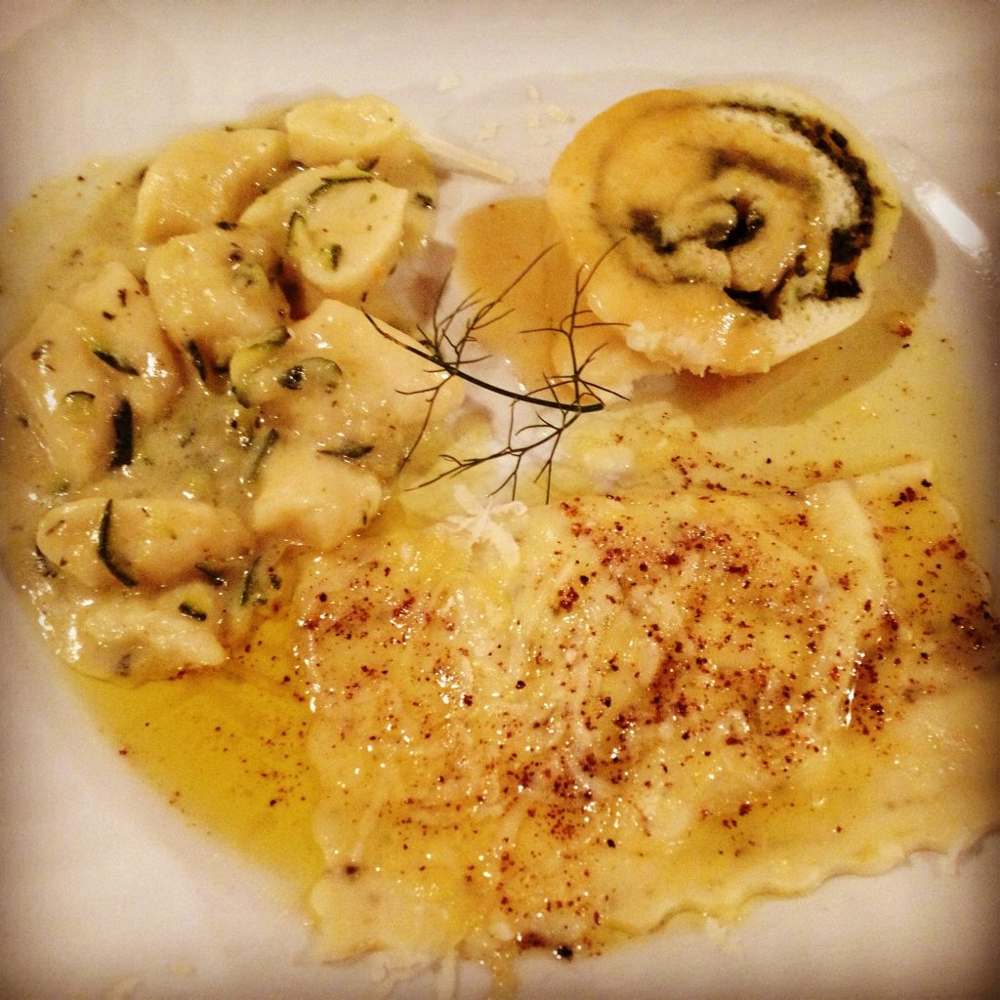

Assaggini
The typical Italian menu will list the dishes following a specific order (antipasto, primo, secondo, contorno, dolce, etc), which may be confusing since in many countries people are used to eating only one dish (piatto) with everything else included. In fact, Italian portions are smaller than American ones, so it is not going to be too overwhelming to order an antipasto, a primo and a secondo. If you are not very hungry, you can certainly order only one or two dishes. If the menu offers too many inviting options, then ask for assaggini (also called trio di primi), which is a dish that combines usually three (sometimes two or four) different small portions. For example: let’s suppose you are uncertain if you want to try that delicious pasta al pesto or tortellini alla panna, or even those inviting gnocchi al ragu’ that the person next to you is happily eating. In these circumstances ask the waiter to bring you a plate of assaggini with those specific dishes, and your wish will soon come true… {This is an excerpt from chapter 3 “Italian cuisine and food establishments” of the eBook “Italy from the Inside. A native Italian reveals the secrets of traveling in Italy”. Buy our eBook on Amazon and leave us a review! If it’s good, you’ll make us happy, if it’s bad, you’ll make us improve. Thank you either way!}